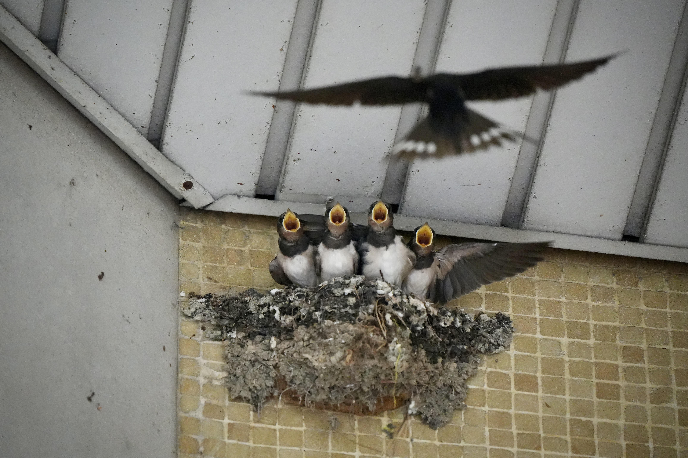
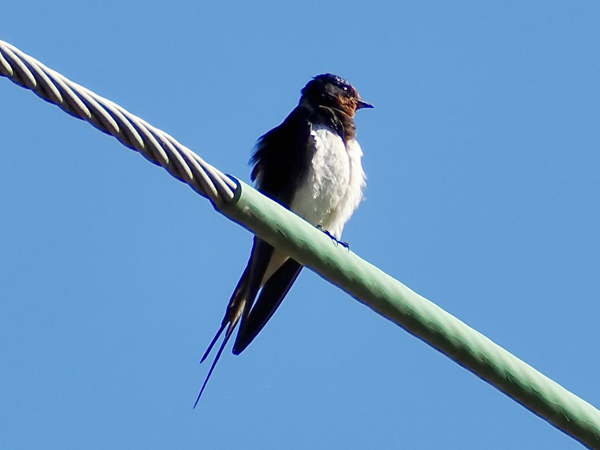

Barn Swallow
Hirundo rustica
Order: Passeriformes
Family: Hirundinidae

The familiar swallow that lives under our roofs. Has blue-black upperparts, rufous throat and a long forked tail with two white patches. Male has longer tail streamers. Juvenile is duller with a yellow gape. This nest is found at the entrance of a residential estate. The parents feed their chicks every few minutes.

Has a slender teardrop-shaped body. Unlike swifts that rarely land, swallows sometimes perch on telephone wires. Although they look and behave in similar ways, swallows and swifts are not closely related.